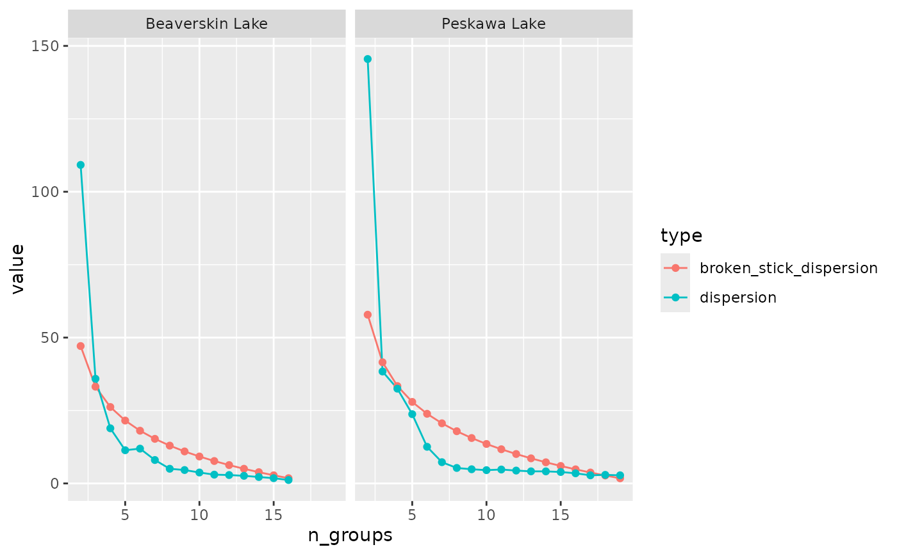

nested_hclust( .data, data_column = "data", qualifiers_column = "qualifiers", distance_fun = stats::dist, n_groups = NULL, ..., .fun = stats::hclust, .reserved_names = character(0) ) nested_chclust_conslink( .data, data_column = "data", qualifiers_column = "qualifiers", distance_fun = stats::dist, n_groups = NULL, ... ) nested_chclust_coniss( .data, data_column = "data", qualifiers_column = "qualifiers", distance_fun = stats::dist, n_groups = NULL, ... )
Arguments
| .data | A data frame with a list column of data frames, possibly created using nested_data. |
|---|---|
| data_column | An expression that evalulates to the data object within each row of .data |
| qualifiers_column | The column that contains the qualifiers |
| distance_fun | |
| n_groups | The number of groups to use (can be a vector or expression using vars in .data) |
| ... | |
| .fun | Function powering the clustering. Must return an hclust object of some kind. |
| .reserved_names | Names that should not be allowed as columns in any data frame within this object |
Value
.data with additional columns
References
Bennett, K. (1996) Determination of the number of zones in a biostratigraphic sequence. New Phytologist, 132, 155-170. http://doi.org/10.1111/j.1469-8137.1996.tb04521.x (Broken stick)
Grimm, E.C. (1987) CONISS: A FORTRAN 77 program for stratigraphically constrained cluster analysis by the method of incremental sum of squares. Computers & Geosciences, 13, 13-35. http://doi.org/10.1016/0098-3004(87)90022-7
Juggins, S. (2017) rioja: Analysis of Quaternary Science Data, R package version (0.9-15.1). (https://cran.r-project.org/package=rioja).
See hclust for hierarchical clustering references
Examples
#> #>#> #> #>#> #> #>nested_coniss <- keji_lakes_plottable %>% group_by(location) %>% nested_data(depth, taxon, rel_abund, fill = 0) %>% nested_chclust_coniss() # plot the dendrograms using base graphics plot(nested_coniss, main = location, ncol = 1)# plot broken stick dispersion to verify number of plausible groups library(ggplot2) nested_coniss %>% select(location, broken_stick) %>% unnest(broken_stick) %>% tidyr::gather(type, value, broken_stick_dispersion, dispersion) %>% ggplot(aes(x = n_groups, y = value, col = type)) + geom_line() + geom_point() + facet_wrap(vars(location))